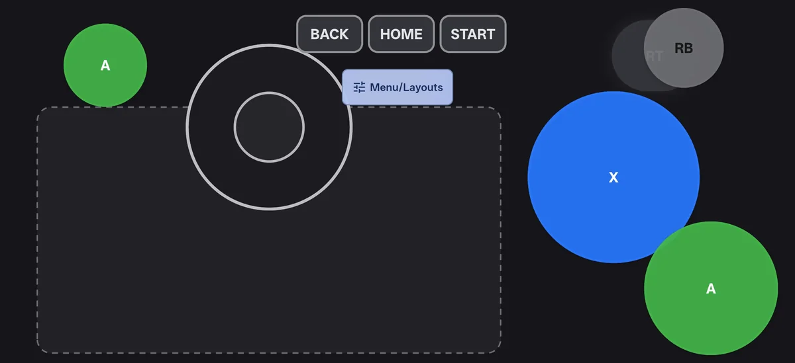

Ваш телефон стал контроллером.
Геймпад, клавиатура и мышь, пульт для ТВ и пульт для слайдов для вашего ПК, Mac, телевизора или планшета.
Бесплатно. По Bluetooth на другом устройстве ничего устанавливать не нужно.

Подключайтесь как удобно
Bluetooth
Ничего не нужно устанавливатьОдин раз выполните сопряжение в настройках Bluetooth на ПК, Mac, телевизоре или планшете. Телефон определится как настоящий геймпад, клавиатура и мышь.
Как настроить BluetoothWi‑Fi с Companion
Windows, по желаниюМинимальная задержка, сам находит ваш ПК и позволяет играть до 16 телефонам одновременно.
Браузер или SmartScreen показывает предупреждение?
Companion появился недавно, поэтому Windows и браузер его пока не знают. Для новых программ это нормально.
- Браузер сообщает, что файл редко скачивают: откройте загрузки (Ctrl + J), откройте меню файла и выберите «Сохранить», а затем, если спросят, «Всё равно сохранить».
- «Система Windows защитила ваш компьютер»: нажмите «Подробнее», затем «Выполнить в любом случае».
- Разрешите запрос контроля учётных записей, чтобы установщик мог добавить драйвер ViGEmBus.
Установщик добавляет драйвер ViGEmBus с открытым исходным кодом, только если его нет, чтобы игры видели телефон как контроллер Xbox. Для Wi‑Fi разрешите Companion доступ к частным сетям в брандмауэре Windows.
Настоящий контроллер в вашем телефоне
Стики, триггеры, бамперы и крестовина. Игры видят настоящий контроллер, поэтому всё просто работает.


- Плавающие стикиПоявляются там, куда вы поставили палец.
- Нажатие стикаДважды коснитесь стика, чтобы нажать его.
- Игра компаниейДо 16 телефонов на одном ПК с Windows, каждый как отдельный контроллер.
Не только геймпад
Меняйте раскладки в меню. То же приложение, то же подключение.
-

МышьТачпад, клики, прокрутка и сочетания клавиш. -

КлавиатураВсе клавиши, включая F-клавиши и сочетания. -

Пульт для ТВГромкость, воспроизведение и стрелки для любого ТВ-приложения. -

Пульт для слайдовPowerPoint, Google Презентации или Canva.
Ещё в приложении

- БесплатноВ Google Play.
- Без аккаунтаОткрыли и играете.
- Всё в вашей сетиНажатия идут прямо с телефона на ваше устройство.

Возьмите телефон. Жмите «Играть».
Бесплатно для Android. Companion для Windows по желанию.